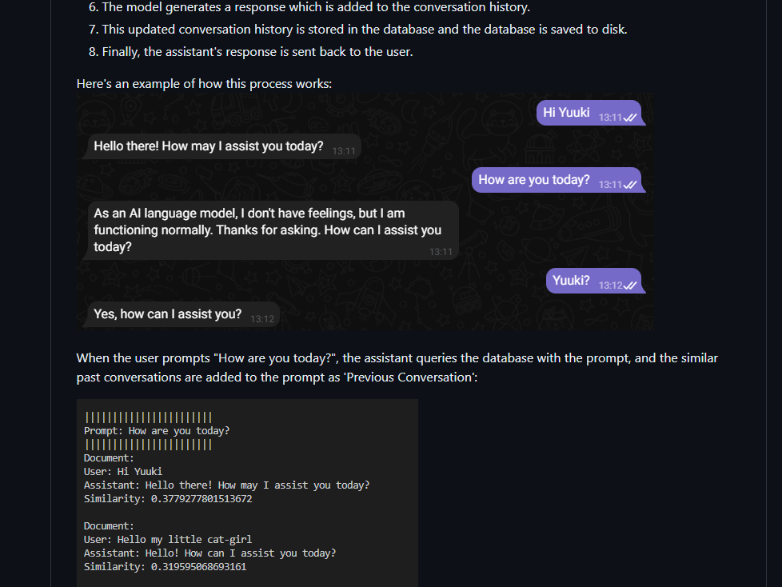

My projects
Long Term Memory Chat
Project 2
I want to create AGI
Long Term Memory Chat Assistant is an AI-powered conversational bot that leverages OpenAI's GPT-3.5 and Sentence Transformers' 'all-MiniLM-L6-v2' models. The chat assistant is unique in its ability to remember and reference past interactions, enhancing user engagement through personalized, context-aware dialogues. Perfect for developers, researcher.

Information about project 2.